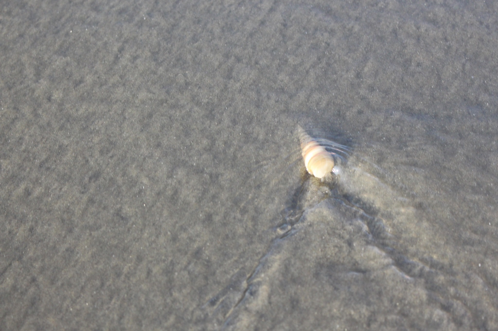
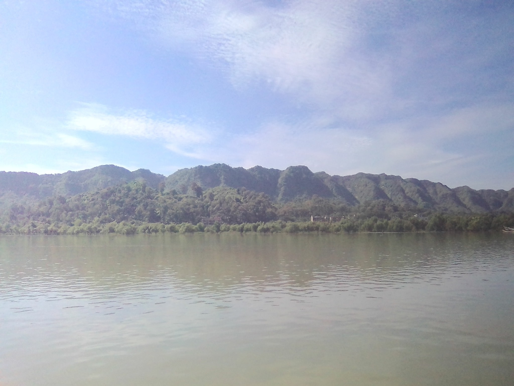
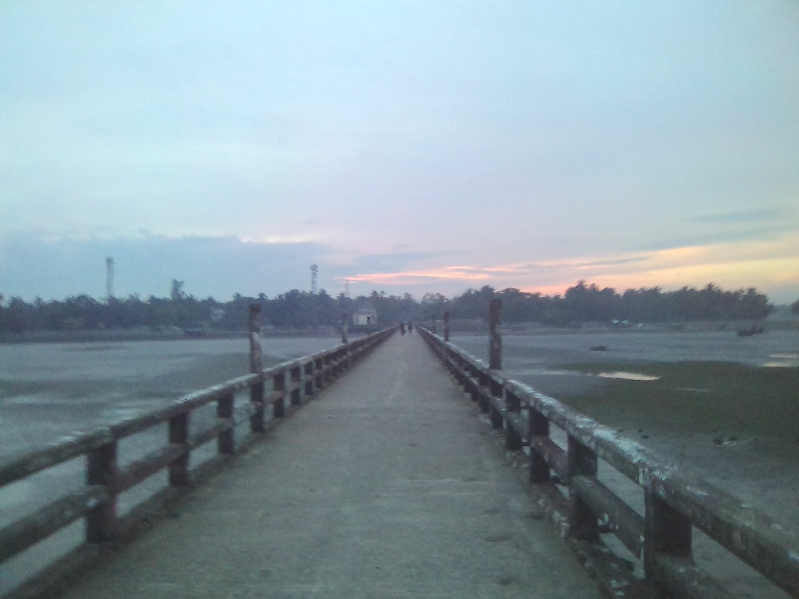

Trip to Cox’sBazar
25th October, 2018
Dhaka to Cox'sBazar
বিশাল বড় এক জার্নির শুরুটা হলো ঝামেলা দিয়ে। ফার্স্ট সেমিস্টারে একজন ফেল করলো ফিজিক্সে। বললো যেতে পারবে না। আমাদের প্রথম প্ল্যান ছিল সাজেক যাবার, কিন্তু নানা মতবিরোধের কারণে ঠিক হলো যাব কক্সবাজার। তারপর আমরা যাব সেন্টমার্টিন। এইখানেও জট, আশিক বললো সে যেতে পারবে না সেখানে। শেষ পর্যন্ত ঠিক হলো যারা যাবে না তাদের কক্সবাজারে রেখেই আমরা রওনা দিব। ২৫ তারিখ ছিল হিউম ল্যাব প্রেজেন্টেশন। শেষ করতে করতে সন্ধ্যা ৬ টা বাজলো। আমি, প্রান্ত, ফারুকি নতুন মেসে এসে পড়লাম। ইয়োশা মধুবাগ থেকে এসে আমাদের সাথে যাবে আর আশিক তার এক বন্ধুকে নিয়ে জয়েন করবে কমলাপুর বাস টার্মিনালে, এই ছিল কথা। এইবার লাগলো ঝামেলা। সাতটার দিকে সৌরভ জানালো সেও যাইতে চায়। ঐদিকে আমাদের ছয়জনের টিকেট অলরেডি কাটা। সবাই পড়লো টেনশনে কারণ ঐ বাসের আর কোনো সীট নাকি নাই। পরের বাসে খালি আছে কিন্তু সৌরভের বাবা যদি সৌরভকে কমলাপুরে ছাড়তে আসে তাহলে একা তো আর যেতে দিবে না। তড়িঘড়ি করে রেডি হয়ে আমরা রওনা হলাম কাউন্টারের উদ্দেশ্যে। শেষ পর্যন্ত ব্যবস্থা হলো। একই বাসে শেষ সীটে ওকে আনা হলো। রাত পৌনে এগারোটায় শুরু হলো আমাদের ভ্রমণ।
26th October, 2018
Cox'sBazar
সকাল সাড়ে নয়টায় আমরা পৌঁছলাম কক্সবাজার। অটোতে করে সাতজন শুরু করলাম হোটেল খোঁজা। একটা পাওয়া গেল ডাবল রুম, ৩ বেড। দফারফা হলো পার ডে অনুযায়ী দুইদিনে ১৮০০ টাকা(হিল পার্ক রিসোর্ট)। মোটেই সুবিধার হোটেল না। কেবল থাকার জন্য থাকা, যদিও তেমন কোনো প্রবলেম ফেস করতে হয়নি এরপর। পাশের হোটেলে খেতে বের হলাম একটু পর। খাওয়া দাওয়া শেষে সবাই যখন ফিরছিলো, আমি, প্রান্ত, ইয়োশা বের হলাম বিচ ঠিক কতটুকু দূরে দেখার জন্য। ভালোই দূরে ছিল হাঁটার হিসাবে, ১৫/২০ মিনিট। সুগন্ধা পয়েন্ট। সমুদ্রের পাড়ে নেমে মুগ্ধ। বিশাল বিশাল ঢেউ গর্জন করে এসে তীরে আছড়ে পড়ছে আর তার মাঝে অসংখ্য মানুষের দাপাদাপি। তখনই নামতে ইচ্ছে করছিলো। কিন্তু সঙ্গে ছিল না কাপড়। বাধ্য হয়ে ফেরার সময় আমি তীরের দোকান থেকে ১২০ টাকায় একটা থ্রি কোয়াটার কিনলাম। রিকশা করে আমরা ফিরে আসলাম। সৌরভ, আশিক আর ইশান ততক্ষণে বিচে চলে গেছে। মনোমালিন্য হলো বীচে কখন নামবো আমরা এই নিয়ে। শেষে ঠিক হলো, দুপুরে খাওয়া দাওয়া সেরে নামব আমরা।
ফুটবলে কিক দিতে গিয়ে নতুন কেনা থ্রি-কোয়াটার গেল ছিড়ে!
সেই হোটেলে দুপুরে আমি খেলাম কোরাল মাছের তরকারি। ১৪০ টাকা প্যাকেজ, অনেক দাম। কিন্তু মাছটাতে অন্যরকম একটা স্বাদ ছিল। কাটাগুলো ছিল বড় বড়। খাওয়াদাওয়া সেরে তৈরী হয়ে আমরা রওনা হলাম বীচের জন্য। অটোতে করে সাতজনে ৩৫ টাকা দিয়ে কলাতলি বীচ পয়েন্টে নামলাম। তখন আনুমানিক আড়াইটা বাজে। আশিক ফুটবল এনেছিল। তাই নিয়ে আমরা নেমে পড়লাম।
পরের অংশটা কেবল স্বপ্নময়। আধো আলো ছায়াতে দাপাদাপি, কখনো পোজ দিয়ে দাড়িয়ে ছবি তুলা। তখন চলছিল ভাটা। ঢেউগুলা মোটামুটি বড় ছিল। গ্রুপ ছবি তুললাম আমরা লাফিয়ে। অন্যরকম একটা শেড কাজ করছিলো তখন যেহেতু সূর্য ছিল একদম সমূদ্রের দিকে। তারপর শুরু হলো ফুটবল নিয়ে কাড়াকাড়ি। সীমানা নির্ধারণ হলো জুতা দিয়ে। আমি, প্রান্ত, সৌরভ, আশিক আনাড়ি বলে এক টীম। ঐদিকে ইশান, ফারুকি, ইয়োশা এক টীম। আশিক আবার নিজেদের গোলপোস্টে গোল দেয়ার জন্য কিক মেরে বলে এইটা কাদের পোস্ট!
আমার কপাল খারাপ শুরু হলো। ফুটবলে কিক দিতে গিয়ে নতুন কেনা থ্রি কোয়াটার(নতুন?) গেল ছিড়ে। পুরো পেছন থেকে সামনের উপরে। খারাপ অবস্থা। সৌরভকে আমার সামনে রেখে গেলাম পেন্ট আরেকটা কিনতে বীচের দোকান থেকে। অবশেষে ২৭০ দিয়ে কিনলাম আরেকটা, সেটা এখনো সার্ভাইব করে আছে।

আবার ফিরে গিয়ে দেখি সব সমুদ্রে নেমে পড়েছে। কীসের খেলা, ঝাপিয়ে নেমে পড়লাম। ঢেউ আসে আর ধাক্কা দিয়ে সরিয়ে দিয়ে যায়। একেকসময় বিশাল ঢেউ আসে আর কাটানোর জন্য আমরা ঢেউয়ের সাথে লাফ দেই। তীরের জিনিসপত্র ডিএসএলআর পাহারা দেবার জন্য পালাক্রমে কেউ না কেউ থাকে। শেষে ফুটবল নিয়ে পানিতেই চোর পুলিশ খেলা শুরু। সন্ধ্যা নামার সাথে সাথে আমি রিস্ক নিয়ে (:3) নিয়ে আসলাম ইয়োশার ফোন। ডুবে ডুবেই তোলা হলো গ্রুপ সেলফি। তারপর আর কী। স্বপ্নময় মুহূর্তগুলো শেষ করে তীরে আবার ফিরে আসলাম আমরা।
শুরু হলো মাছ খাবার জন্য দোকান খোঁজা। ভেজা আর বালু ভর্তি কাপড়চোপড় নিয়ে আমরা তাজা মাছ ভাজা খাবার জন্য খোঁজলাম। কিন্তু আশেপাশের সবগুলো ছিল রেস্টুরেন্ট। অবশেষে দিদি দাদাবাবুকে ফোন দিয়ে জানলাম এইরকম দোকান আছে সুগন্ধা পয়েন্টে। ঐদিকে ফারুকি গিয়ে পাশের সেন্টমার্টিন এজেন্সিতে গিয়ে কথা বলা শুরু করলো। শেষে ঠিক হলো পরদিন সকাল ছয়টায় আমাদের নিয়ে যাবে, নয়টায় শীপ। সেন্টমার্টিনে পৌঁছবে ১২ টা/১ টায়। তারপর আমাদের ফিরিয়ে নিয়ে আসবে তার পরদিন বিকাল ৩ টায়। হোটেল ভাড়া ১০০০ সহ সব মিলিয়ে ১৪০০ টাকার প্যাকেজ।নিয়ে নিলাম আমরা পাঁচজন, আশিক আর ইশান নেয়নি। তারপর অটোতে করে আমরা গেলাম সুগন্ধা পয়েন্টে। নেমেই হাতের ডানে তাজা মাছের দোকান। মাছ সিলেক্ট করে বলে দিলে ভেজে দেবে। এত এত সামুদ্রিক মাছ, দাম আকাশছোঁয়া, যদিও আগের রেস্টুরেন্টের তুলানায় কম।
শেয়ার করে আমরা নিলাম ফুল একটা অক্টোপাস(৫০০ টাকা), একটা করে স্কুইড(৩৫ টাকা), দুইটা ক্র্যাব চারজনে(৭০ টাকা করে), একটা স্যামন মাছ বারবিকিউ চারজনে(২৫০ টাকা)। অক্টোপাসটা ভালোই ছিল, কিন্তু এত ছোট কেন হলো বুঝলাম না, মনে হলো কেবল রিংগুলা দিলো। স্যামন মাছের মশলাটা হয়নি কিন্তু মাছের স্বাদটা অসাধারণ।
এতকিছু(!) খাবার পর আমার বিল আসলো ২৭৫ টাকা, যদিও পেট ভরেনি। ব্যাক করলাম আমরা কিছু টুকিটাকি জিনিস(আচার, চকলেট) কিনে। কিন্তু ক্ষুধা মেটাতে সেই হোটেলে আবার খেলাম আমরা। এইবার আমি নিলাম লইট্যা মাছের ফ্রাই। ঝুরি ঝুরি ৭/৮ টা টুকরা, দাম নিলো ৭০ টাকা। কাঁটাগুলা বুঝাই যায় না এমন সুতার মতো। স্বাদ ভালোই ছিল, যদি আরেকটু বেশি বড় হতো।
খাওয়া শেষ করে বিশ্রাম নিয়ে রাত আনুমানিক সাড়ে এগারোটায় আবার কলাতলি বীচে আমরা। প্ল্যান ছিল জ্যোৎস্নায় বিচে বসে সারারাত গান করব। একপাশে থাকবে সমুদ্রের গর্জন, একপাশে অন্ধকার আর আকাশে চাঁদ। হলো না। তখন চলছিল ভাটা। সুনসান রাতকে খানখান করে বিশাল বিশাল ঢেউ আছড়ে পড়ছিলো তীরে। এত কাছে পানি এসেছিল যে তীরের বালুময় জায়গা অল্পই ছিল, আর তীর ঘেষে হোটেলগুলোর লাইটের কারণে চাঁদের আলো বুঝাই ঝাচ্ছিলো না। বাধ্য হয়ে ফারুকির বুদ্ধিমত হোটেল থেকে আনা পেপার বালুতে রেখে বসে কিছুক্ষণ থেকে একে একে সবাই উঠে পড়লাম। অন্ধকারের জোয়ারের সমুদ্র ভয়াবহ। বহুদূর পর্যন্ত কেবল কালো, কেবল ঢেউ যখন আছড়ে পড়ে তখন পানির অস্তিত্ব আর ক্ষমতা, দুটোই জানান দেয়। হোটেলে ফিরে এসে সকালের জন্য ঘুমিয়ে পড়লাম আমরা।
27th October, 2018
Cox'sBazar, Teknaf, Saint Martin, Shah Porir Dwip, Teknaf, Ukhiya, Marine Drive, Cox'sBazar, Dhaka
সকাল সাড়ে ছয়টায় এসে বাস দাঁড়ালো আমাদের সামনে। ভোর পাঁচটায় উঠে রেডি হয়ে এজেন্সির কথা মতো পৌনে ছয়টায় আশিক আর ইশানের কাছ থেকে বিদায় নিয়ে আমরা তখন মেইন রোডে দাঁড়িয়ে। ছোট লোকাল বাস, এজেন্সির জন্য বুকড। শুরু হলো আমাদের পথচলা। দুপাশের সারি সারি পাহাড়। বামে মায়ানমারের বড় বড় পাহাড়ের সাথে পাল্লা দিয়ে ডানে আমাদের পাহাড়। আমি তখন জিপিএসে লোকেশন দেখা নিয়ে ব্যস্ত। কখন আসবে নাফ নদী আর পাহাড়ের উপরের রাস্তা! উখিয়া পার হবার সময় দেখলাম রোহিঙ্গা শিবির। হাজার হাজার বাঁশ আর টিনের ঘর পাহাড় কেটে তৈরি করেছে একটার পর একটা। একটু নিচেই পালা করে সারি সারি কবর, বাঁশের বেড়া না থাকলে বোধহয় বুঝাই যেত না যে ওগুলো আসলে কী। দেখলে গা শিউরে উঠে যে কবরের পাশাপাশি মানুষগুলো কীভাবে দিন কাটাচ্ছে। অনেকগুলো ক্যাম্পে ভর্তি উখিয়া পার হবার পর কুতুপালং আরও বিভিন্ন এলাকা পড়লো। ক্রমশ নাফ নদী আর বামের পাহাড়গুলো নিকটে আসছে। কিন্তু কপাল খারাপ। পাহাড় বেয়ে যে রাস্তা ম্যাপে দেখলাম, তা আসার আগেই হঠাৎ আমরা টেকনাফে এসে পড়লাম।
দূরের মিয়ানমার
ফারুকির ওয়ার্ল্ড ক্লাস ফটোগ্রাফি(!)
নাফ নদী
এজেন্সির টিকেট দেখিয়ে শীপের টিকেট নেয়া হলো, ফাঁকে ফাঁকে ছবি তোলাও চলল। তারপর রওনা হলাম শীপের উদ্দেশ্যে। নাফ নদীতে নোঙর করা শীপে উঠে চারপাশ শুধু মুগ্ধ হয়ে দেখার মতো দেখলাম। জেটিটা বাঁশের মাচায় তৈরী। একটু দূরেই আরেকটা জেটিতে আরো দুটো জাহাজ নোঙর করা। যেহেতু স্ট্যান্ডিং টিকেট, তাই আমরা ডেকে গিয়ে দাঁড়ালাম। কড়া রোদ, কিন্তু কিছু করার নেই। উজ্জলতা এতই বেশি যে ছবি তুললে কুয়াশার মতো ঝাপসা লাগে সবকিছু। সত্যি বলতে দুপাশেই কেমন যেন কুয়াশামত ছিল, যেন আড়াল করে রাখতে চায় প্রকৃতি তার রূপ।
"অনিকেত" নদী

তারপর সাড়ে নয়টা অথবা দশটার দিকে ছেড়ে দিলো শীপ। ধীরে ধীরে আমরা বাংলাদেশ পার হচ্ছি। সমুদ্রের পানিও ধীরে ধীরে সবুজ হয়ে গেল। ডেকের এক কোনায় বসে গান ধরল ফারুকি। একে একে আমি প্রান্ত সৌরভ শুরু করে দিলাম। আর সে কী টান। কোন গানটা যে বাকি ছিল গাওয়া হয়নি, কে জানে। গলা ছেড়ে দিয়ে আকাশ কাঁপিয়ে সুর মিলানো। আমি ভয়ে ভয়ে ছিলাম, কখন আবার কেউ এসে বন্ধ করতে বলে।কিন্তু কেউ বললো না, বরং মনে হলো সবাই বিষয়টা বেশ উপভোগ করছে। একসময় সেই পাহাড়ী রাস্তাটা দেখতে পেলাম। বাংলাদেশের বড় বড় পাহাড়গুলো পার হয়ে একসময় সীমানা শেষ হয়ে গেল। কেবল বাম পাশে পড়ে রইলো মায়ানমারের কাঁটাতার সংলগ্ন ধুধু প্রান্তর আর বিশাল বিশাল পাহাড়। অসহ্য গরমটা গান গেয়ে, ছবি তুলে কখন যে কাটিয়ে দিলাম, একটার দিকে জাহাজ পৌঁছালো সেন্টমার্টিন দ্বীপে। নামার সময় জেটি দেখে চোখ কপালে। এত পরিষ্কার নীল পানি! ভেতরের সব দেখা যায়। যত গভীর হোক, তলা পর্যন্ত স্বচ্ছ পানি চিকচিক করছে।
আমরা দ্বীপে ঢুকে ডাব খেলাম। তারপর ভ্যানে করে গেলাম শাহজালাল রিসোর্ট, যেখানে আমাদের থাকার কথা। অনেক প্ল্যান ছিল আমাদের। দিনটা দ্বীপের বীচে পানিতে কাটিয়ে সারারাত তীরে আড্ডা দেওয়া, চাঁদনী রাত বলে কথা। পরদিন যাব ছেঁড়াদ্বীপে। সাইকেল ভাড়া করে নিয়ে যাব আর ঘুরে আসব। তারপর বিকাল তিনটার শীপে আবার ব্যাক করব টেকনাফ, তারপর এজেন্সির বাসে করে কক্সবাজার।
হোটেলে জিনিসপত্র রেখে না খেয়েই সবাই চলে গেলাম মাত্র পাঁচ মিনিট দূরের বীচে। দ্বীপটা আসলেই কত ছোট, একটু পরেই বুঝলাম। যে বীচে গেলাম ঐটা প্রবালে ভর্তি। পানি খুব একটা পরিষ্কার না। প্রবালে হাত পা কাটা খুবই স্বাভাবিক এতটাই ধারালো। বাধ্য হয়ে আমরা যেতে লাগলাম মেইন বীচে, যেটা নাকি একদম বীচের বিপরীতে। ১০/১৫ মিনিটও বোধহয় হয়নি, মেইন বীচে এসে পড়লাম। জুতা রেখে নেমে পড়লাম আমরা। কিন্তু অবস্থা এমন, যাচ্ছি তো গভীরে যাচ্ছিই, গলা পর্যন্ত আর পানি উঠে না, কোমড় পর্যন্তই পড়ে থাকে! ঐদিকে ঘোলা পানির কারণে দেখা যায় না প্রবাল।কী এক বিপদ। শেষে একসময় একদম প্রবাল নাই এমন সীমানা পেলাম। পার তখন অনেক দূর। শুরু হলো আমাদের দাপাদাপি। একসময় দেখলাম যে পানি কোমড়ে ছিল ঐটা আবার হাঁটুতে নেমে এসেছে। অনেক মানুষ এসে পড়েছে কাছে। বুঝলাম ভাটা চলছে। আমরা উঠে পড়লাম।
হোটেলে এসে ফ্রেশ হলাম খেতে বের হবো বলে। সকাল থেকে খাওয়ার সুযোগ হয়নি। বিড়ম্বনার শুরু হলো ঠিক তখন। ফারুকিকে এজেন্সি থেকে ফোন দিলো, শ্রমিক ধর্মঘটের কারণে পরেরদিন যে শীপ আসার কথা সেটা বাতিল হয়েছে। আমাদের নাম্বারে আগেও ট্রাই করেছে। কিন্তু আমরা ফোন রেখে গেলাম, তাই জানতেও পারলাম না। যারা আজ এসেছে তাদের তিনটার শীপে ফেরত নিয়ে গেছে, আর তখন অলরেডি সাড়ে তিনটা বাজে। মাথায় হাত। আমাদের একজনের কাছেও তখন এত টাকা নেই যে দুইদিন থেকে ব্যাক করব। এই দ্বীপে কোনো এটিএম বুথ নেই, না আছে বিদ্যুৎ।সোলার প্যানেলে সারা দ্বীপ চলে। দুদিনের ধর্মঘট মানে দুদিন হোটেল ভাড়া ২০০০, খাবার কথা বাদই দিলাম, আমার কাছেই মোটে ছিল ১৫০০। দ্বীপের প্রতিটা জিনিস বাইরে থেকে আনা, দাম মারাত্মক রকমের বেশি। দেশের বাইরে বলতে গেলে বিদেশ। আবার ঐদিন ট্রলার না থাকার সম্ভাবনা অনেক বেশি।মাঝ সমুদ্র ভয়ানক জিনিস তা আশার সময়ও দেখেছি। পরদিনের আশায় থাকলে ঢাকায় যাওয়া হবে না কারণ সব বাস বন্ধ থাকবে, তাই কক্সবাজারে গিয়ে পড়ব আরো বিপদে। এখন উপায়?
স্পিডবোট! তাও খোলা সমুদ্রে!
আমরা গিয়ে কটেজের মালিকের সাথে কথা বললাম। উনি সব বুঝলেন। সৌরভের ঐদিকে ক্লিয়ারেন্স পরীক্ষার ডেট দেয় নাই। উনি তখন শেষ পর্যন্ত স্পিডবোটের কথা বললেন। স্পিডবোট! তাও খোলা সমুদ্রে! কোনো উপায় তো নেই। তরী ঘড়ি করে রেডি হলাম আমরা। ভিজা কাপড়চোপড় ব্যাগে নিয়েই আমরা উনার সাথে জেটিতে গেলাম। লোকটা ভালো, ছয়জনে ভ্যানওয়ালার কষ্ট হবে বলে নিজে হেঁটে গেলেন। জেটিতে গিয়ে মন্দ কপালের আরেকটা নিদর্শন পেলাম আমরা। একটা ট্রলার ছিল সেটাও নাকি দশ মিনিট হলো ছেড়ে গেছে। দূরে দেখা যাচ্ছিলো ঐটা। শেষে উনিই খরচ কমিয়ে একটা স্পিডবোট ঠিক করে দিলেন, কিন্তু ঐটা টেকনাফ যাবে না। আমাদের শাহপরীর দ্বীপে নামিয়ে দিয়ে আসবে। কিছুই করার নেই, সাড়ে তিন হাজারে ঠিক করে মাঝ সমুদ্রে নেমে পড়লাম আমরা।
উঁকি দিচ্ছে শাহ্পরীর দ্বীপ
উত্তাল ঢেউ। পড়ন্ত বিকেলের সূর্য তখন বাম পাশে নামছে। একেকটা ঢেউ এমনভাবে এসে বাড়ি দেয় যে চারদিকে ছিটকে পানি ভিতরে এসে ভিজিয়ে দিতেসে। মাঝ সমুদ্রে আশার পর যে দৃশ্য দেখলাম, যে ঢেউ গর্জন করে তীরে আছড়ে পড়ে তা যে মাঝ সমুদ্রেও একই রকম করে জানা ছিল না। বেগতিক বিশাল ফেনল ঢেউ দেখে একসময় ইঞ্জিন বন্ধ করে দিল চালক। সে ঢেউ কেবল দেখা যায়, বলা যায় না। আবার একটু পর চালু হলো। তখন ধীরে ধীরে বাম পাশে চর জেগে উঠছে। কয়েকটা জেলে সে চরে মাছ ধরছে, হ্যাঁ, বাংলাদেশের শেষ মাথা এটা। সর্বশেষ অংশ। আমি কখনো ভাবিনি কপালে এমন একটা দৃশ্য দেখার সুযোগ জুটবে। শাহপরীর দ্বীপের জেটি বাংলাদেশের সর্বশেষ জেটি। চালক আমাদের সেখানে নামিয়ে দিতেই এক বিজিবি এগিয়ে আসলো। কেন কী কারণে এখানে জানতে চাইলো। তারপর চলে গেল।

রোহিঙ্গা প্রবেশের মূল স্থান
প্রত্যন্ত এই অঞ্চলেই কত খুনখারাবির খবর শুনি আমরা রোজ
জেটি পার হয়ে ভিতরে ঢুকে কথামতো সিএনজি নিলাম। টেকনাফে নামিয়ে দিবে, ৫০০ টাকা ভাড়া। তখন বাজে সাড়ে পাঁচটা। অন্ধকার নামছে এলাকাজুড়ে। সিএনজি যখন একটু দূরে বালুমতো একটা রাস্তায় উঠলো, হাতের বামে তখন অদ্ভুত এক বন। সরু অনেকগুলো গাছ এমাথা থেকে ওমাথা পর্যন্ত দাঁড়িয়ে আছে সন্ধ্যার অন্ধকারে। মনে হলো ঝাউবন। হ্যাঁ, সিএনজির মামা তাই বললো। এই সেই ঝাউবন। আরেকটু দূরেই বঙ্গোপসাগর আবছা দেখা যায়, উপরে চাঁদ উঠেছে। জ্যোৎস্না যদিও রূপ পায়নি তবুও কেমন যেন সবকিছু অপার্থিব। ভৌতিক একটা পরিবেশ। প্রত্যন্ত এই অঞ্চলেই কত খুনখারাবির খবর শুনি আমরা রোজ। মেরিন ড্রাইভ করার জন্য সেনাবাহিনীর তত্ত্বাবধানে কাজ চলছে, তাই এইসব নাকি কমেছে। সমুদ্রেই সেই অন্ধকার রূপ পার হয়ে একসময় আমরা শহরের ভেতরে ঢুকে গেলাম। হয়তো আনুমানিক সাড়ে ছয়টার দিকে অথবা সাতটার দিকে উনি আমাদের টেকনাফ বাস স্ট্যান্ডের একটু আগে নামিয়ে একটা অটোতে উঠিয়ে দিলেন। রাত হয়ে গেছে ততক্ষণে। উনিই বললেন টেকনাফ থেকে নাকি ডিরেক্ট ঢাকা বাস যায়, তাই অটোকে সেদিকেই আমরা যেতে বললাম।
না, কোনো বাস পেলাম না আমরা। বাধ্য হলাম লোকাল বাসে উঠতে। ১২০ টাকা করে ভাড়া। বাসে থেকেই ফারুকি ফোনে আশিককে বললো ঢাকার আর ওর জন্য চট্টগ্রামের টিকেট কাটতে। আশিক কক্সবাজার থেকে ১১ঃ২০ এর টিকেট কেটে রাখলো। আমাদের যেতে তখনো দেরি। জানালার পাশে বসতে পারলাম বলে বাইরের বাতাসটা টের পেলাম। অল্প অল্প বিদ্যুৎ চমকাচ্ছে। তার মাঝে প্রচুর বাতাসে বসে আছি। কিছু দূরে গিয়েই বাস থামালো। বিজিবি উঠলো। টর্চ ফেলে একে একে সবার মুখ আর সীটের আশেপাশে দেখলো। একটা ছেলে সীট থেকে বের করলো। ওর বুকের কাছে কী যেন শুঁকলো, তারপর সারা দেহ তল্লাশি করলো, ব্যাগটা খুলে ভেতরের সবকিছু দেখলো। ছেড়ে দিলো ওকে, আর শেষ সীটের একজন লোককেও দেখলো একইভাবে। বাসের বনেট, প্রত্যেকের সীটের ফাঁক, কিছুই দেখা বাকি রাখলো না। বাস ছেড়ে দিলো। একটু পর গিয়ে আবারো একই কাহিনী। সেই ছেলেকে আবার চেক করলো। এই বাস রোহিঙ্গা শিবির পৌঁছা পর্যন্ত মোট ছয়বার চেকিং হলো। একেকবার চেকিং হলো একেক রকম। কখনো বাসের নিচে আর বনেট দেখলো, কখনো মানুষ দেখলো। উখিয়ায় শিবিরে গিয়ে একটুর জন্য বাস থামলো, তখনো কয়েকজন বাস থেকে নেমে পড়লো। বুঝলাম এরা রোহিঙ্গা। সেন্টমার্টিনে কটেজের কাজের ছেলেটাও ছিল রোহিঙ্গা। ১৫ দিন হলো সে নাকি পালিয়ে এসেছে, বিজিবিরা সরিয়ে দিয়েছে। বাংলা মোটামুটি পারে, কেবল রুম কিংবা এজাতীয় ইংরেজি শব্দ যেগুলো বাংলায় আমরা ব্যবহার করি, কিংবা আক্ষরিক বাংলা শব্দ বুঝে না।
সারি সারি রোহিঙ্গা বাড়িঘরে আলো জ্বলছে পাহাড় জুড়ে। অদ্ভুত এক দৃশ্য। সাত লাখ রোহিঙ্গা এসেছে সেটা নিশ্চিত। তার কত অংশ যে কোথায় ছড়িয়ে গেছে কে জানে। কক্সবাজার থেকে টেকনাফ ৭৯ কিলো। উখিয়া ২৯/৩০ কিলো। টেকনাফ থেকে শাহপরীর দ্বীপ, যেখান থেকে খোলা সমুদ্র হয়ে রোহিঙ্গারা এসেছে, তা আরো প্রায় ৩০ কিলো বা বেশি। কক্সবাজারের এত কাছে এত বিপুল সংখ্যক রোহিঙ্গা থাকে, বিষয়টা আসলেই ভয়াবহ।
বিপত্তি বাঁধল আবার, উখিয়াতেই। সামনে কোথায় যেন বাস না ট্রাক উল্টে পড়ে সমস্ত রাস্তা বন্ধ করে দিয়েছে। বাস থেকে সবাইকে নামিয়ে দিলো। তখনো প্রায় ৩০/২৫ কিলো বাকি। কোনোরকমে তর্ক করে ফারুকি ৩০ টাকা করে ১৫০ টাকা আদায় করলো হেল্পার থেকে। তারপর আবার সিএনজি নিতে হলো। কিন্তু সিএনজি যাবে কোথায়? একটুও ফাঁকা জায়গা নেই যাবার মতো। শেষে ঠিক হলো মেরিন ড্রাইভ হয়ে আমাদের নিয়ে যাবে। তখন প্রায় পৌনে দশটার উপরে বাজে। বাস ধরতে হবে। না ধরলে আর যাওয়াই হবে না। রিস্ক নিতেই হলো। আমরা রওনা হলাম।
অন্ধকার রাস্তা। এক ফোঁটা আলো আসলেও ঐটা গাড়ির হেডলাইট কেবল। সিএনজি চালকের কথায় আরো ভয় ধরে গেল। এই এলাকায় দিনে যত গাড়ি চলে রাতে তার সিকিভাগও চলে না। খুনাখুনি সবচেয়ে বেশি হয় এই অংশে। সিএনজি যদি কোনো স্পটে থামিয়ে ছিনতাইকারীর হাতে ধরিয়ে দেয়, খুন করে রেখে চলে যাবে। ডানে পাহাড়, বামে সমুদ্র, কেউ টেরও পাবে না। কী ভয়ানক। মেরিন ড্রাইভের রাস্তায় যখন সিএনজি উঠলো তখনই পুলিশ দাড় করালো। বয়স্ক পুলিশ অফিসার, সাথে আরো দুইজন। প্রায় ১৫/২০ মিনিট কেবল জিজ্ঞাসাবাদ। কোথায় গিয়েছিলাম, কোথা থেকে আসলাম,হোটেল কেমন ছিল, খাওয়া দাওয়া কেমন ছিল, আজব সব প্রশ্ন। এক প্রশ্ন ঘুরিয়ে ফিরিয়ে বারবার। অথচ একবারও জিজ্ঞেস করলো না কোথা, কীসে পড়ি। অপরদিকে তখন সাগরের গর্জন ভেসে আসছে আর অদ্ভুত এক বাতাস ভেসে আসছে সেই দিক হতে। ঝাউবন পার হলেই সমুদ্র, স্রোত আর ঢেউ আবছা আবছা দেখা যায়। আর কী উদাস করা বাতাস, এত ভয়ের মাঝেও কেমন জানি করে। শেষ পর্যন্ত বাসের কথা শুনে ছেড়ে দিল আমাদের। সিএনজি আবার চলতে শুরু করলো। হিমছড়ি পার হলাম আমরা সেই সুনসান রাস্তার মধ্য দিয়ে। অদ্ভুত এক পরিবেশ এই মেরিন ড্রাইভে। বামে সমুদ্রের ঢেউ আর ঝাউবন,ডানে পাহাড়। শেষ পর্যন্ত চাঁদের আলোয় অপরূপ মুহূর্তগুলো কাটিয়ে আমরা পৌঁছালাম ডলফিন মোড়ে(৩৭০ টাকা)। তখন বাজে ১০ঃ২০। আমার কাছে এজেন্সির টিকেট ছিল। সেটা দেখিয়ে ফারুকি ১০০ টাকা করে ৫০০ টাকা ফেরত নিয়ে আসলো। সাড়ে এগারোটায় শ্যামলীর বাসে উঠলাম। আর এভাবেই সমাপ্তি হলো বিশাল এক ট্যুরের।
ছেঁড়াদ্বীপ হয়তো দেখা হয়নি। গভীর রাতে থাকা হয়নি বীচে। কিন্তু এগুলোই বা কম কী! :)
15th June, 2019